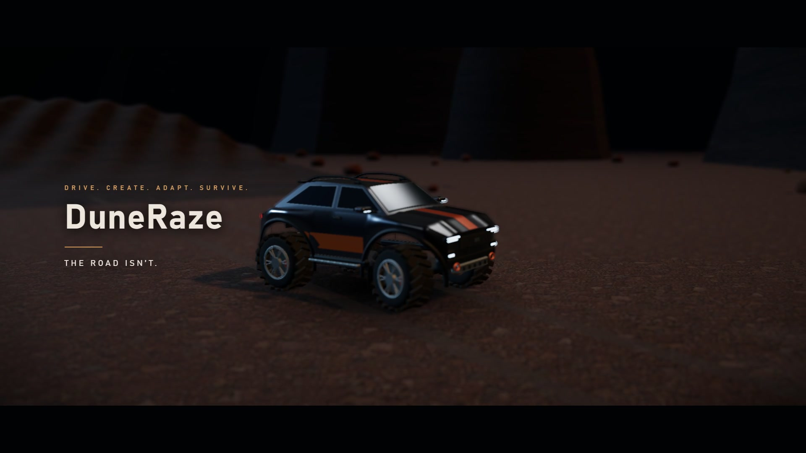

MULTIPLAYER · PRE-RELEASE3D BROWSER GAME
DuneRaze
A 2–4 player desert racing game where opponents reshape the road ahead. Combines real-time multiplayer, 3D driving, terrain editing, and strategic vehicle upgrades.
Open to Java Full-Stack Developer roles
Hi there, I’m
Java Full-Stack Developer
I turn ideas into responsive web applications, with Java and Spring Boot behind the scenes and thoughtful interfaces up front.
01 / Selected work
A collection of real projects—from full-stack applications and multiplayer games to experiments in AI. Every one is a chance to learn something new.

MULTIPLAYER · PRE-RELEASE3D BROWSER GAME
A 2–4 player desert racing game where opponents reshape the road ahead. Combines real-time multiplayer, 3D driving, terrain editing, and strategic vehicle upgrades.
FEATURED PROJECT · AI FOR SOCIAL GOOD
A voice-triggered safety prototype that captures a camera snapshot, sounds a local alarm, and sends emergency notifications through Firebase and Telegram.
COMPUTER VISION · PROTOTYPE
A webcam prototype that detects prolonged eye closure and yawning using VGG16 classifiers, with local sound alerts and Firebase notifications.
FULL-STACK DEVELOPMENT
A healthcare management prototype with user and admin interfaces for exploring care services, handling requests, managing staff, and tracking complaints.
BUILDING MANAGEMENT · WEB + ANDROID
A building management system first built as a PHP and MySQL web app, then extended with an Android app. It supports tenant records, maintenance requests, rent tracking, notifications, and admin reporting.
A selection of my projects, with live previews and source code where available.
02 / A little about me
I’m Nuthanaganti Chandrakanth, a Java Full-Stack Developer building web applications with Java, Spring Boot, React, and SQL.
I like the whole process: understanding a problem, figuring out the moving parts, and turning an idea into something people can actually use. My focus is Java full-stack development: building REST APIs, working with databases, and connecting reliable backend logic to clear, responsive interfaces.
I’m currently looking for a Java Full-Stack Developer job where I can contribute, keep learning, and build software alongside a thoughtful team.
03 / My toolkit
A foundation in software fundamentals, paired with hands-on experience across the stack.
Responsive experiences for the web.
The logic that makes it all work.
Structure, clarity, and problem solving.
From an idea to a working project.
04 / Experience
Hands-on development, real challenges, and something new to learn with every project.
SkillCraft Technology
Built a series of practical web projects, including a responsive landing page, stopwatch, tic-tac-toe game, and task planner using HTML, CSS, and JavaScript.
Explore the projectsOasis Infobyte
Worked on Java-based applications, debugging, and code optimization while strengthening software development fundamentals through hands-on implementation.
05 / Education
MLR Institute of Technology
Narayana Junior College
Brilliant Grammar High School
A moment I’m proud of
HackVriksh Hackathon 2025
NPTEL · Programming in Java
Smart Interviews · DSA Smart Coder
HackerRank · SQL
Cisco · Data Analytics Essentials
06 / Let’s connect
Have an opportunity or a project in mind? I’d love to hear about it.